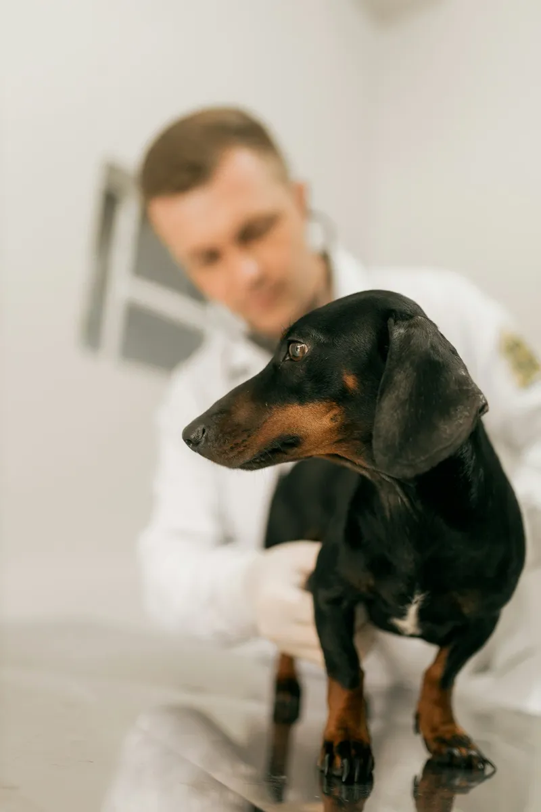
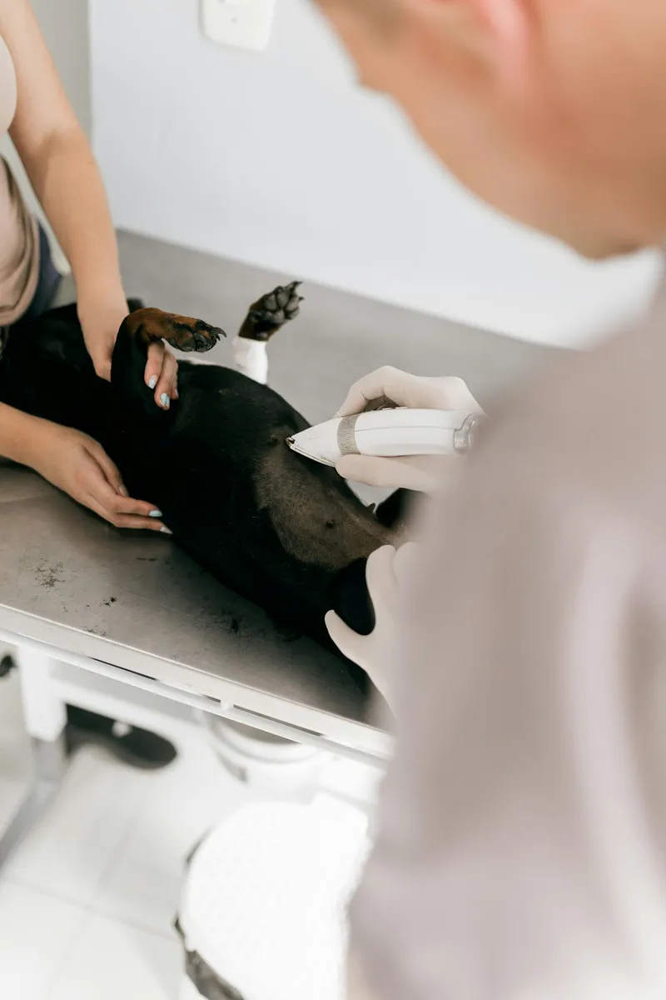

Checking…
Care that treats them like family.
Fear Free certified vets for dogs, cats and rabbits. Longer appointments, calm waiting rooms and a nurse who knows your pet’s name.
- 4.9★ 3,200 reviews
- 24/7 emergency cover
- Fear Free certified

30-minute
appointments.
Longer slots mean we listen first, examine properly and explain everything in plain English.

Care timeline
What does your dog need, and when?
Feeding calculator
How much should they eat?
0kcal a day
- Dry food
- Or wet food
- Treats (max 10%)
Meet the team
Find the right vet.
Dr Amara Osei
Clinical director · small animals
Soft-tissue surgery and a gift for nervous patients.
In clinic: Mon–Thu
Book with Amara →Dr Will Hartley
Cats & exotics
Qualified in feline medicine, with a soft spot for rabbits.
In clinic: Tue–Sat
Book with Will →Dr Nina Kowalski
Dermatology & dentistry
Itchy skin, sore ears and sparkling teeth.
In clinic: Mon, Wed–Fri
Book with Nina →Sam Reid RVN
Head nurse · puppy & kitten classes
Weight clinics, nail trims and the best puppy socials in Norwich.
In clinic: Every day
Book with Sam →
No one matches that filter right now. Try “Everyone”.
Book a visit
Let’s see your best friend.
We can’t wait to meet .
Reference
Demo only: nothing was sent.